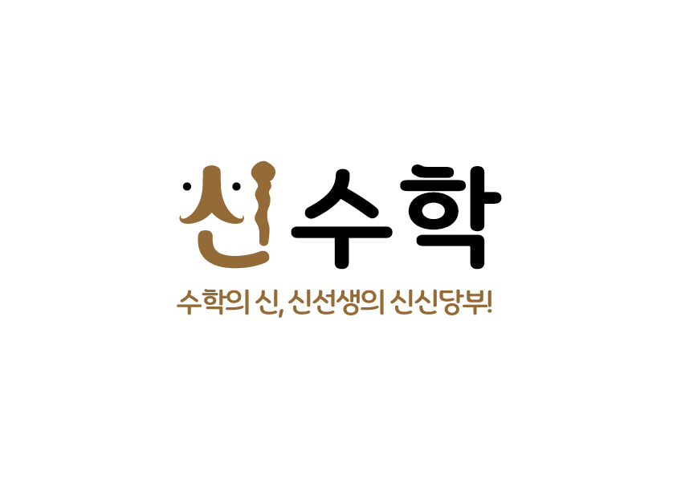

<!DOCTYPE html>
<html lang="ko">
<head>
<meta charset="utf-8">
<meta name="viewport" content="width=device-width, initial-scale=1">
<title>나의 오답노트 — 신수학</title>
<link rel="manifest" href="manifest.json">
<!-- manifest 에 start_url 을 일부러 안 둔다(2026-08-28) — 두면 설치된 앱이 토큰 없는 주소로
     열린다. 아이폰 홈화면 앱은 사파리와 저장소가 분리라 localStorage 복원도 못 받는다.
     start_url 이 없으면 "설치한 그 페이지"(?s=토큰 포함)가 시작 주소가 되어 양쪽 다 안전. -->
<meta name="theme-color" content="#3182f6">
<meta name="apple-mobile-web-app-capable" content="yes">
<meta name="apple-mobile-web-app-title" content="신수학학원">
<link rel="apple-touch-icon" href="icon-192.png">
<link rel="stylesheet" href="https://cdn.jsdelivr.net/npm/katex@0.16.11/dist/katex.min.css">
<link rel="stylesheet" href="https://cdn.jsdelivr.net/gh/orioncactus/pretendard@v1.3.9/dist/web/variable/pretendardvariable-dynamic-subset.min.css">
<script defer src="https://cdn.jsdelivr.net/npm/katex@0.16.11/dist/katex.min.js"></script>
<script defer src="https://cdn.jsdelivr.net/npm/katex@0.16.11/dist/contrib/auto-render.min.js"></script>
<style>
  /* 🎨 2026-08-28 원장 "토스 형태로" — 정본: Desktop\99_보관\기타\DESIGN.md (oh-my-design Toss/TDS,
     검증 2026-07-11). 토큰: primary #3182f6 · surface #f2f4f6 · fg #191f28 · muted #8b95a1 ·
     weak CTA #e8f3ff/#1b64da · danger #e42939 · radius 8~16(버튼)/20(카드) · 플랫(그림자 금지).
     폰트: Toss Product Sans는 재배포 불가 → Pretendard(무료 대체) + 시스템 폴백.
     변수명(--accent 등)은 옛 이름 유지 — JS 템플릿이 참조하므로 값만 토스로 재지정. */
  :root { --ink:#191f28; --body:#4e5968; --muted:#8b95a1; --accent:#3182f6; --accent-h:#2272eb;
          --ok:#14ae5c; --red:#e42939; --line:#e5e8eb; --surface:#f2f4f6;
          --weak:#e8f3ff; --weakfg:#1b64da; }
  * { box-sizing:border-box; }
  body { font-family:'Pretendard Variable',Pretendard,-apple-system,'Malgun Gothic',sans-serif;
         color:var(--ink); max-width:720px; margin:0 auto; padding:16px 16px 32px; background:var(--surface); }
  h1 { font-size:1.35rem; font-weight:700; letter-spacing:-.4px; margin:6px 0 4px; }
  .sub { color:var(--muted); font-size:.88rem; line-height:1.6; margin-bottom:16px; }
  .dash { background:#fff; border-radius:20px; padding:16px 20px; margin-bottom:12px;
          display:flex; gap:22px; flex-wrap:wrap; }
  .dash .kpi { font-size:.8rem; color:var(--muted); display:flex; flex-direction:column; gap:2px; }
  .dash .kpi b { color:var(--ink); font-size:1.15rem; font-weight:700; letter-spacing:-.3px; }
  .card { background:#fff; border-radius:20px; padding:20px; margin-bottom:12px; }
  .badge { background:var(--weak); color:var(--weakfg); border-radius:8px; padding:3px 10px;
           font-size:.78rem; font-weight:600; }
  /* overflow-x — 폰(375px)에서 긴 한 줄 수식이 잘려 조건이 사라지는 것을 막는다. */
  .problem { font-size:1.02rem; line-height:1.8; margin:12px 0; overflow-x:auto; color:var(--ink); }
  .choices { display:flex; flex-direction:column; gap:6px; margin:6px 0 12px; font-size:.97rem; color:var(--body); }
  .ans-row { display:flex; gap:8px; flex-wrap:wrap; margin:6px 0; }
  .pill { border-radius:8px; padding:6px 12px; font-size:.84rem; font-weight:600; }
  .pill.mine { background:#fdebec; color:var(--red); }
  .pill.correct { background:#e6f6ed; color:#0e8a49; }
  details { border-radius:12px; margin-top:8px; overflow:hidden; background:var(--surface); }
  summary { cursor:pointer; padding:12px 16px; font-weight:600; font-size:.92rem; color:var(--body); }
  .slot-body { padding:4px 16px 14px; line-height:1.8; color:var(--body); }
  a.btn, button.btn { display:inline-block; margin-top:10px; background:var(--weak); color:var(--weakfg);
    border:0; border-radius:12px; padding:12px 18px; font-weight:600; font-size:.92rem;
    text-decoration:none; cursor:pointer; font-family:inherit; }
  a.btn:active, button.btn:active { background:#d8eafe; }
  .nav { margin-bottom:12px; } .nav a { color:var(--weakfg); font-weight:600; text-decoration:none;
    font-size:.85rem; margin-right:6px; background:#fff; border-radius:10px; padding:7px 12px; display:inline-block; }
  .note { color:var(--muted); font-size:.8rem; margin-top:18px; line-height:1.7; text-align:center; }
  .empty { color:var(--muted); padding:24px 0; text-align:center; line-height:1.7; }
  /* ── 🎯 시험대비 퀘스트 카드 ── */
  .quest{}
  .qhead{font-weight:700;font-size:1.02rem;color:var(--ink);display:flex;align-items:center;gap:8px;letter-spacing:-.3px}
  .qdday{font-size:.76rem;background:var(--accent);color:#fff;border-radius:8px;padding:3px 9px;font-weight:700}
  .qbarwrap{height:8px;background:var(--surface);border-radius:6px;margin:14px 0 8px;overflow:hidden}
  .qbar{height:100%;background:var(--accent);border-radius:6px;transition:width .8s ease}
  .qstat{font-size:.86rem;color:var(--muted)} .qstat b{color:var(--ink)}
  .qsub{margin-top:12px;font-size:.78rem;font-weight:700;color:var(--muted)}
  .qgoal{font-size:.88rem;padding:5px 0;color:var(--body)}
  .qgoal.qdone{color:#0e8a49}
  .qunit{font-size:.74rem;color:var(--muted);margin-right:4px}
  /* ── 세 칸(오늘 / 복습 대기 / 도구함) ── */
  .sect { margin:24px 4px 10px; font-size:1.05rem; font-weight:700; letter-spacing:-.3px;
          display:flex; align-items:center; gap:8px; }
  .sect .cnt { font-size:.8rem; color:var(--muted); font-weight:400; }
  .sect .why { font-size:.78rem; color:var(--muted); font-weight:400; }
  .pick { border:1px solid var(--line); border-radius:12px; padding:12px 14px; cursor:pointer;
          background:#fff; text-align:left; font-size:.96rem; font-family:inherit; color:var(--body); }
  .pick:hover { border-color:var(--accent); }
  .pick.ok { background:#e6f6ed; border-color:#bfe6cf; color:#0e8a49; font-weight:600; }
  .pick.no { background:#fdebec; border-color:#f6c6ca; }
  .pick[disabled] { cursor:default; opacity:.8; }
  .verdict { margin:10px 0 2px; font-size:.92rem; font-weight:600; }
  .verdict.ok { color:#0e8a49; } .verdict.no { color:var(--red); }
  .acts { display:flex; gap:8px; flex-wrap:wrap; margin-top:14px; padding-top:14px; border-top:1px solid var(--surface); }
  button.ask { background:var(--surface); color:var(--body); border:0; border-radius:12px;
    padding:12px 16px; font-weight:600; font-size:.88rem; cursor:pointer; font-family:inherit; }
  button.ask:active { background:#e5e8eb; }
  button.ask.sent { color:var(--muted); cursor:default; }
  .askbox { margin-top:10px; display:none; }
  .askbox textarea { width:100%; border:1.5px solid var(--line); border-radius:12px; padding:12px 14px;
    font-family:inherit; font-size:.92rem; resize:vertical; min-height:56px; background:#fff; }
  .askbox textarea:focus { outline:none; border-color:var(--accent); }
  .askbox .hint { color:var(--muted); font-size:.8rem; margin:6px 0; line-height:1.6; }
  /* 💬 선생님 답 */
  .reply { margin-top:12px; background:var(--surface); border-radius:12px; padding:13px 16px; }
  .reply + .reply { margin-top:8px; }
  .reply .rh { font-size:.78rem; font-weight:700; color:var(--weakfg); margin-bottom:5px; }
  .reply .rb { font-size:.93rem; line-height:1.7; color:var(--body); white-space:pre-wrap; word-break:break-word; }
  .reply .rt { font-size:.74rem; color:var(--muted); margin-top:6px; }
  .tool { background:#fff; border-radius:16px; padding:14px 18px; margin-bottom:8px;
          display:flex; align-items:center; justify-content:space-between; gap:10px; flex-wrap:wrap; }
  .tool .nm { font-size:.93rem; color:var(--ink); font-weight:600; }
  .tool .ck { color:#0e8a49; font-weight:600; font-size:.84rem; white-space:nowrap; }
  .tool .ck a { color:var(--weakfg); }
  .due { font-size:.76rem; color:var(--muted); background:var(--surface); border-radius:8px; padding:3px 9px; }
  /* 💡 5단계 힌트 */
  .hstep { background:var(--weak); border-radius:12px; padding:12px 15px; margin-top:8px; }
  .hstep .hh { font-size:.78rem; font-weight:700; color:var(--weakfg); margin-bottom:4px; }
  .hstep .hb { font-size:.93rem; line-height:1.75; color:var(--ink); }
  button.hbtn { margin-top:10px; background:var(--weak); color:var(--weakfg); border:0; border-radius:12px;
    padding:12px 16px; font-weight:600; font-size:.88rem; cursor:pointer; font-family:inherit; }
  button.hbtn:active { background:#d8eafe; }
  /* 📡 못 보낸 질문 배너 */
  .pending { background:#fff; border:1.5px solid var(--line); color:var(--body); border-radius:12px;
    padding:12px 15px; font-size:.85rem; margin:8px 0 12px; line-height:1.6; }
  /* 📱 설치 안내 · 👀 학부모 미리보기 */
  .notice { border-radius:16px; padding:14px 16px; font-size:.87rem; line-height:1.65; margin-bottom:12px; }
  .notice.a2hs { background:var(--weak); color:var(--weakfg); }
  .notice.a2hs b { color:#0f56c9; }
  .notice.a2hs button { float:right; border:0; background:none; color:var(--weakfg); opacity:.7;
    font-size:.8rem; cursor:pointer; padding:2px 4px; font-family:inherit; }
  .notice.demo { background:#fff; color:var(--body); border:1.5px solid var(--line); }
  /* 🏫 학교 카드 */
  .school {}
  .school .sh { display:flex; align-items:center; gap:8px; flex-wrap:wrap; font-weight:700;
    font-size:1rem; letter-spacing:-.3px; }
  .school .dd { font-size:.76rem; background:var(--accent); color:#fff; border-radius:8px;
    padding:3px 9px; font-weight:700; }
  .school .meal { font-size:.9rem; color:var(--body); line-height:1.7; margin-top:8px; }
  .school .meal b { color:var(--weakfg); }
  .foot { text-align:center; margin:28px 0 10px; color:var(--body); font-size:1rem; font-weight:700; letter-spacing:-.3px; }
  .foot img { width:160px; display:block; margin:0 auto 8px; opacity:.95;
    mix-blend-mode:multiply; /* 로고 PNG의 흰 배경을 회색 캔버스에 녹인다 */ }
</style>
</head>
<body>
<div id="app"></div>

<script src="me_data.js"></script>
<script src="me_quests.js"></script>
<script src="school_feed.js"></script>
<script>
// 📱 2026-08-28 원장 승인 — "앱처럼": 한 번 열면 토큰을 이 폰에 기억해서, 다음부터는
//   홈 화면 아이콘(주소만 열어도)으로 자기 페이지가 바로 뜬다. 복구 경로 = 오답노트 표지 QR.
//   🔴 demo(학부모 미리보기)는 기억하지 않는다 — 아이 폰에서 미리보기를 열었다가
//   자기 토큰이 demo 로 덮이면 앱 아이콘이 남의집 구경 화면이 돼버린다.
let SID = new URLSearchParams(location.search).get('s') || '';
try {
  if (SID && SID !== 'demo') localStorage.setItem('me_sid', SID);
  else if (!SID) SID = localStorage.getItem('me_sid') || '';
} catch(e) {}
const IS_DEMO = (SID === 'demo');
// 2026-08-13 — 이 페이지의 열쇠(SID)는 긴 토큰으로 바뀌었다. 리더(index.html)는 여전히
// 4자 코드로 학생을 식별하므로, 강의 링크에는 데이터에 실려온 리더코드를 쓴다.
// 옛 4자 코드로 들어온 경우(demo 등)는 SID 를 그대로 쓴다.
let RC = '';
function rurl(hash){ return RC ? './index.html?s=' + encodeURIComponent(RC) + (hash||'') : ''; }
function rlink(label, hash){ const u = rurl(hash); return u ? `<a href="${u}">${label}</a>` : ''; }
function rbtn(label, hash){ const u = rurl(hash); return u ? `<a class="btn" href="${u}">${label}</a>` : ''; }
// 열람 기록 비콘 (리더와 동일 폼)
const LOG = { action:"https://docs.google.com/forms/d/e/1FAIpQLSf4uKawAYL5SKV4A2yGv8ok_2VGIs-4opvnh6CpeljkY35LeA/formResponse", 코드:"entry.1580342508", 내용:"entry.1507722106" };
const _logged = new Set();
function logView(label){ if(!SID||IS_DEMO||_logged.has(label))return; _logged.add(label);
  const b=new URLSearchParams(); b.append(LOG.코드,SID); b.append(LOG.내용,label);
  fetch(LOG.action,{method:'POST',mode:'no-cors',body:b}).catch(()=>{}); }
// 🔴 2026-08-25 — 아이 행동(질문·정복)도 **같은 폼**으로 남긴다. 이 페이지는 GitHub Pages(정적)라
//   서버가 없다. 열람 로그가 이미 이 폼을 쓰고 있으니 새 인프라를 만들지 않는다.
//   logView 와 달리 중복 차단을 하지 않는다 — 같은 문항을 두 번 물으면 두 번 다 원장에게 가야 한다.
// 🔴🔴 2026-08-25 — 전송 실패를 **아무도 모르던** 것을 고친다.
//   옛 코드는 `.catch(()=>{})` 로 실패를 통째로 삼켰고, 화면엔 무조건 "✅ 전달됐어요" 가 떴다.
//   아이는 보냈다고 믿고 기다리는데 원장에게는 안 온다 — 고해소에서 가장 나쁜 경우다.
//   `mode:'no-cors'` 라 서버 4xx/5xx 는 원리상 못 읽지만(opaque), **네트워크 실패(오프라인·
//   연결 끊김·DNS)는 reject 로 잡힌다.** 아이가 폰으로 여는 페이지라 실제 사고는 대부분 이쪽이다.
//   못 보낸 건 큐에 남겨 **다음에 페이지를 열 때 자동 재전송**한다.
const QKEY = 'meq_' + SID;
function qGet(){ try { return JSON.parse(localStorage.getItem(QKEY)||'[]'); } catch(e){ return []; } }
function qSet(a){ try { localStorage.setItem(QKEY, JSON.stringify(a.slice(-30))); } catch(e){} }
function qAdd(label){ const a=qGet(); a.push({label, at:new Date().toISOString().slice(0,16)}); qSet(a); }
function postLog(label){
  if (IS_DEMO) return Promise.resolve();   // 미리보기는 열람로그·질문 시트를 더럽히지 않는다
  const b=new URLSearchParams(); b.append(LOG.코드,SID); b.append(LOG.내용,label);
  return fetch(LOG.action,{method:'POST',mode:'no-cors',body:b});
}
// 성공/실패를 호출부에 알려준다. ok=false 면 큐에 들어간 것.
function logAct(label, done){ if(!SID) return;
  postLog(label).then(()=>{ done && done(true); })
                .catch(()=>{ qAdd(label); done && done(false); }); }
// 밀린 것 재전송 — 페이지를 열 때, 그리고 온라인으로 돌아올 때.
let _flushing = false;
function flushQueue(cb){
  const a = qGet();
  if (!a.length || _flushing) { cb && cb(qGet().length); return; }
  _flushing = true;
  const rest = a.slice();
  (function step(){
    if (!rest.length) { qSet([]); _flushing=false; cb && cb(0); return; }
    const it = rest[0];
    postLog(it.label).then(()=>{ rest.shift(); qSet(rest); step(); })
                     .catch(()=>{ _flushing=false; cb && cb(rest.length); });
  })();
}
window.addEventListener('online', ()=> flushQueue(renderPending));

// ── 📷 질문 사진 첨부 (2026-09-01 원장 "아이들이 찍어서 보낼 수 있게") ──────────
//   전송 목적지 = Apps Script 웹앱(/exec). 시트 폼은 파일을 못 받으므로 별도 창구다.
//   비어 있으면(배포 전) 📷 버튼 자체가 안 그려진다 — 반쪽 기능을 아이에게 보이지 않는다.
const QPHOTO = '';
//   ① 기기에서 긴 변 1280px JPEG 로 줄여 보낸다(사진 4MB→수백KB, 아이 데이터 아끼기).
//   ② 사진은 오프라인 큐에 안 넣는다 — localStorage 에 사진을 쌓으면 기기 상한(5MB)을
//      바로 넘는다. 실패하면 정직하게 "인터넷 연결되면 다시"라고 말하고, 글 질문만
//      기존 큐로 남긴다(사진은 붙임 상태 유지 → 다시 보내기 버튼만 누르면 됨).
let _php = {};            // askbox id → dataURL (붙여 둔 사진)
let _phT = null;          // 파일선택 대상 id
function phPick(id){ _phT = id; const f=document.getElementById('qphoto_file'); if(f){ f.value=''; f.click(); } }
function phClear(id){ delete _php[id]; const p=document.getElementById('ph_'+id); if (p) p.innerHTML=''; }
function phOnPick(inp){
  const f = inp.files && inp.files[0], id = _phT;
  if (!f || !id) return;
  const img = new Image();
  img.onload = function(){
    const M = 1280, s = Math.min(1, M / Math.max(img.width, img.height));
    const c = document.createElement('canvas');
    c.width = Math.round(img.width*s); c.height = Math.round(img.height*s);
    c.getContext('2d').drawImage(img, 0, 0, c.width, c.height);
    _php[id] = c.toDataURL('image/jpeg', 0.8);
    URL.revokeObjectURL(img.src);
    const p = document.getElementById('ph_'+id);
    if (p) p.innerHTML = `<div style="display:flex;align-items:center;gap:8px;margin:6px 0">
      
      <span class="hint" style="margin:0">📷 사진 1장 준비됐어요</span>
      <button class="ask" style="padding:4px 10px" onclick="phClear('${id}')">지우기</button></div>`;
  };
  img.src = URL.createObjectURL(f);
}
function phSend(id, label, done){
  // 붙인 사진이 있으면 웹앱으로 전송 → done(사진전송ok, 사진있었나)
  const img = _php[id];
  if (!img || !QPHOTO || IS_DEMO) { done(true, false); return; }
  fetch(QPHOTO, { method:'POST', mode:'no-cors',
                  headers:{'Content-Type':'text/plain;charset=utf-8'},
                  body: JSON.stringify({ t:SID, label:label, img:img }) })
    .then(()=>{ phClear(id); done(true, true); })
    .catch(()=>{ done(false, true); });
}
function phBtn(id){
  if (!QPHOTO) return '';
  return `<div id="ph_${id}"></div>
    <button class="ask" style="margin:2px 0 6px" onclick="phPick('${id}')">📷 문제 사진 붙이기</button>`;
}
function renderPending(n){
  const el = document.getElementById('pending');
  if (!el) return;
  el.style.display = n ? 'block' : 'none';
  if (n) el.textContent = `📡 아직 못 보낸 질문이 ${n}개 있어요 — 인터넷이 되면 자동으로 보낼게요.`;
}
// 아이가 이 기기에서 한 것(맞힘·질문)을 기억해 새로고침해도 UI 가 유지되게. **정본은 아니다** —
// 정복 판정은 빌더가 척추(실제 시험 결과)로 계산한다. 기기를 바꾸면 이 표시만 사라진다.
const MEM = 'me_'+SID;
function memGet(){ try { return JSON.parse(localStorage.getItem(MEM)||'{}'); } catch(e){ return {}; } }
function memSet(k,v){ try { const m=memGet(); m[k]=v; localStorage.setItem(MEM,JSON.stringify(m)); } catch(e){} }

const app = document.getElementById('app');
// 🔴🔴 2026-08-13 — 여기가 String() 캐스트뿐이라 **아무것도 이스케이프하지 않았다.**
//   수학 발문에는 부등호가 늘 나온다: `$-1 <a_k <0$` 의 `<a_k` 를 브라우저가 태그로 먹어
//   그 뒤 문장이 통째로 사라졌다(지영윤 유사문제 실측 — 조건이 안 보이니 풀 수 없는 문제가 됨).
//   & 를 먼저 바꿔야 한다(순서 바뀌면 &lt; 가 &amp;lt; 가 된다).
//   KaTeX 는 텍스트 노드를 읽으므로 이스케이프해도 수식 렌더에는 문제가 없다.
const esc = s => String(s??'').replace(/&/g,'&amp;').replace(/</g,'&lt;').replace(/>/g,'&gt;');
const choicesHtml = arr => `<div class="choices">${(arr||[]).map(c=>`<div>${esc(c)}</div>`).join('')}</div>`;

// 🎯 시험대비 퀘스트 (2026-08-27 원장) — exam_prep_rail 이 만든 me_quests.js 를 읽는다.
//   설계 원칙: 결핍 명세서 금지 — 오답 횟수·날짜·전체 미달 목록을 절대 보여주지 않는다.
//   보여주는 것: 진행률(정복/전체) + 이번 주 목표 몇 개 + 최근에 잡은 유형(⭕ 맛보기).
function questHtml(){
  const Q = (window.ME_QUESTS||{})[SID];
  if (!Q || !Q.total) return '';
  const pct = Math.round(Q.done / Q.total * 100);
  const dd = (Q.dday === 0) ? 'D-DAY' : (Q.dday > 0 ? `D-${Q.dday}` : '');
  const goals = (Q.goals||[]).map(g =>
    `<div class="qgoal">⬜ <span class="qunit">${esc(g.u)}</span> ${esc(g.n)}</div>`).join('');
  const recent = (Q.recent||[]).map(g =>
    `<div class="qgoal qdone">⭕ <span class="qunit">${esc(g.u)}</span> ${esc(g.n)}</div>`).join('');
  return `
  <div class="card quest">
    <div class="qhead">🎯 ${esc(Q.school||'')} 시험까지 잡을 유형 ${dd?`<span class="qdday">${dd}</span>`:''}</div>
    <div class="qbarwrap"><div class="qbar" style="width:${pct}%"></div></div>
    <div class="qstat">시험 범위 정복 <b>${Q.done} / ${Q.total}</b> 유형</div>
    ${recent? `<div class="qsub">최근에 잡은 유형</div>${recent}` : ''}
    ${goals? `<div class="qsub">이번 주 목표 — 처방지에서 만나면 잡아보자</div>${goals}` : ''}
  </div>`;
}

// 🏫 학교 카드 — 2026-08-28 원장 승인(공개 repo에 토큰↔학교 결합 생김을 알고 승인).
//   급식·D-day 는 학생이 학교를 고르지 않아도 자기 학교 것이 그냥 뜬다(명단 정본에 이미 있으니까).
//   D-day 정본 = master CSV 시험일(원장 확정값). 급식은 NEIS, 오늘 없으면(주말·방학) 다음 급식.
function schoolHtml(){
  const F = window.SCHOOL_FEED || {};
  const T = (F.tokens||{})[SID];
  if (!T) return '';
  const meals = ((F.schools||{})[T.s]||{}).meals || {};
  const now = new Date();
  const ymd = d => d.getFullYear()+'-'+String(d.getMonth()+1).padStart(2,'0')+'-'+String(d.getDate()).padStart(2,'0');
  let dd = null;
  (T.exams||[]).forEach(e=>{
    const t = Math.round((new Date(e.d) - new Date(ymd(now))) / 864e5);
    if (t >= 0 && t <= 60 && (!dd || t < dd.t)) dd = {t, label:e.label};
  });
  const ddHtml = dd ? `<span class="dd">${esc(dd.label)} ${dd.t===0?'D-DAY':'D-'+dd.t}</span>` : '';
  let mealHtml = '';
  for (let k = 0; k <= 7; k++){
    const d = new Date(now); d.setDate(d.getDate()+k);
    const m = meals[ymd(d)];
    if (m){
      const when = k===0 ? '오늘 급식' : `다음 급식 (${d.getMonth()+1}/${d.getDate()} ${'일월화수목금토'[d.getDay()]})`;
      mealHtml = `<div class="meal">🍚 <b>${esc(when)}</b> — ${m.map(esc).join(' · ')}</div>`;
      break;
    }
  }
  if (!ddHtml && !mealHtml) return '';
  return `<div class="card school"><div class="sh">🏫 ${esc(T.s)} ${ddHtml}</div>${mealHtml}</div>`;
}
function footHtml(){
  return `<div class="foot"></div>`;
}
// 📱 상단 안내 — 학부모 미리보기(demo) 또는 홈 화면 설치 유도(진짜 학생, 1회 닫으면 끝).
//   카톡 인앱 브라우저는 "홈 화면에 추가"가 없어서 브라우저로 나가는 단계부터 알려준다.
function noticeHtml(){
  if (IS_DEMO) return `<div class="notice demo">👀 <b>학부모 미리보기</b> — 실제 학생이 아닌 <b>가상 예시 화면</b>입니다.<br>
    재원생은 이 자리에 본인의 오답·유사문제·단계별 힌트·선생님 답장(영상)이 담깁니다.</div>`;
  try {
    if (!SID || localStorage.getItem('me_a2hs') === '1') return '';
    if (matchMedia('(display-mode: standalone)').matches || navigator.standalone) {
      localStorage.setItem('me_a2hs','1'); return '';   // 이미 앱으로 열었다 — 다시 안 띄움
    }
  } catch(e){ return ''; }
  const ua = navigator.userAgent;
  const ios = /iPhone|iPad/.test(ua);
  // 카톡 인앱은 OS마다 나가는 길이 다르다 — 아이폰 카톡엔 ⋮가 없고 공유판에 "Safari로 열기"가
  // 있다(2026-08-28 원장 실기기 스크린샷으로 확인). 안드로이드 카톡은 ⋮ → 다른 브라우저로 열기.
  const pre = ua.includes('KAKAOTALK')
    ? (ios ? '공유 버튼 → <b>Safari로 열기</b>를 누른 다음, ' : '오른쪽 아래 <b>⋮ → 다른 브라우저로 열기</b> 한 뒤, ')
    : '';
  const how = ios ? '공유 버튼(□↑) → <b>홈 화면에 추가</b>' : '메뉴(⋮) → <b>홈 화면에 추가</b>';
  return `<div class="notice a2hs"><button onclick="try{localStorage.setItem('me_a2hs','1')}catch(e){};this.parentElement.remove()">닫기 ✕</button>
    📱 ${pre}${how} 해두면 다음부터 <b>앱처럼 한 번에</b> 열려요!</div>`;
}
// 💬 답 본문 — 🎬 답장 영상(2026-08-28 의무 루틴)이 링크로 오면 버튼으로 살린다.
//   esc() 만 거치면 URL 이 죽은 글자라 아이가 눌러볼 수 없다. 링크는 답장영상 루틴이
//   붙인 것만 오므로(원장 손) 첫 URL 하나만 버튼으로 뽑고 나머지는 그대로 글로.
function replyBody(t){
  t = String(t||'');
  const m = t.match(/https?:\/\/[^\s"'<>]+/);
  if (!m) return `<div class="rb">${esc(t)}</div>`;
  const rest = t.replace(m[0], '').replace(/🎬 답장 영상:\s*/,'').trim();
  return `${rest?`<div class="rb">${esc(rest)}</div>`:''}
    <a class="btn" href="${esc(m[0])}" target="_blank" rel="noopener" style="margin-top:6px">🎬 선생님 답장 영상 보기</a>`;
}
function render(){
  const D = (window.ME_DATA||{})[SID];
  RC = (D && D.리더코드) || (SID.length <= 6 ? SID : '');
  if (!SID || !D) {
    app.innerHTML = `<h1>나의 오답노트</h1><div class="card empty">개인 링크로 열어주세요.<br>선생님이 보내주신 링크를 눌러 들어오면 내 오답이 보입니다.</div>`;
    return;
  }
  logView('오답노트 열기');
  if (D.대기) {
    app.innerHTML = `${noticeHtml()}<div class="nav">${rlink('▶ 유형별 강의')}</div>
      <h1>📕 나의 오답노트</h1>
      ${schoolHtml()}
      <div class="card empty">일일테스트 채점이 끝나면<br>여기에 <b>내 오답 + 유사문제 재도전 + 강의</b>가 올라옵니다.${RC?`<br><br>그동안 ${rlink('유형별 강의')}로 복습해두세요!`:''}</div>
      <div id="pending" class="pending" style="display:none"></div>
      ${freeAskHtml(D)}
      ${footHtml()}`;   /* 채점 전에도 물어볼 수 있어야 한다 (2026-08-25 (나)) */
    renderPending(qGet().length);
    flushQueue(renderPending);
    return;
  }
  // 🔴 2026-08-25 세 칸 구성 (원장: "누적된 걸 주기적으로 확인하는 형태. 확실하게 이해한 건
  //   도구함 같은 곳으로 옮기고, 그래도 나중에 다시 확인 가능하게")
  //   ① 오늘 틀린 것 ② 복습 대기(예전에 틀리고 아직 정복 못 한 것 — 빌더가 다시 물을 때가 된
  //   것만 3개 올려준다) ③ 내 도구함(정복 완료, 접혀 있지만 언제든 다시 열림).
  const list = D.오답||[], wait = D.복습대기||[], box = D.도구함||[];
  app.innerHTML = `${noticeHtml()}
    <div class="nav">${rlink('▶ 유형별 강의')}<a href="#">🔄 새로고침</a></div>
    <h1>📕 나의 오답노트</h1>
    <div id="pending" class="pending" style="display:none"></div>
    <div class="sub">틀린 문제를 유사문제로 다시 풀고, 막히면 그 유형 강의를 바로 볼 수 있어요.<br>
      모르겠으면 <b>언제든</b> 아래 버튼으로 물어보세요 — 다른 친구에게는 안 보여요.</div>
    <div class="dash">
      <div class="kpi">진도 <b>${esc(D.진도)}</b></div>
      <div class="kpi">오늘 <b>${list.length}개</b></div>
      <div class="kpi">복습 대기 <b>${wait.length}개</b></div>
      <div class="kpi">🧰 도구함 <b>${box.length}개</b></div>
    </div>

    ${schoolHtml()}
    ${questHtml()}

    <div class="sect">📕 오늘 틀린 것 <span class="cnt">${list.length}개</span></div>
    ${list.length? list.map((o,i)=>card(o,'t'+i)).join('')
      : `<div class="card" style="text-align:center"><div style="font-size:1.05rem;font-weight:bold;color:var(--accent)">오늘은 틀린 게 없어요</div><div class="sub" style="margin-top:6px">아래 복습 대기만 한 번 확인해 볼까요?</div></div>`}

    ${wait.length? `<div class="sect">🔁 복습 대기 <span class="cnt">${wait.length}개</span>
      <span class="why">· 예전에 틀린 유형이에요. 다시 볼 때가 됐어요</span></div>
      ${wait.map((o,i)=>waitCard(o,'w'+i)).join('')}`:''}

    ${box.length? `<div class="sect">🧰 내 도구함 <span class="cnt">${box.length}개</span>
      <span class="why">· 세 번 연속 맞힌 유형이에요. 언제든 다시 열어볼 수 있어요</span></div>
      ${box.map(o=>boxCard(o)).join('')}`:''}

    ${(D.복습&&D.복습.length)? `<div class="sect">📺 시험 대비 복습 강의</div>${D.복습.map(r=>reviewCard(r)).join('')}`:''}
    ${freeAskHtml(D)}
    <div class="note">신수학 재원생 전용 · 이 페이지는 <b>나만</b> 볼 수 있어요.<br>
      질문한 건 선생님만 봅니다 — 틀린 걸 부끄러워하지 않아도 돼요.</div>
    ${footHtml()}`;
  if (window.renderMathInElement) renderMathInElement(app, {
    delimiters:[{left:'$$',right:'$$',display:true},{left:'$',right:'$',display:false}]});
  // 지난번에 못 보낸 질문이 있으면 지금 조용히 다시 보낸다(아이가 다시 쓸 필요 없다).
  renderPending(qGet().length);
  flushQueue(renderPending);
}

function reviewCard(r){
  const seg=r.강의;
  const lec = seg? rbtn('▶ 강의 다시보기', `#u${seg[0]}q${seg[1]}`) : '';
  return `<div class="card" style="display:flex;align-items:center;justify-content:space-between;gap:10px;flex-wrap:wrap;padding:14px 18px">
    <span class="badge">${esc(r.유형)}</span>${lec}</div>`;
}
// ── 유사문제 자가채점 + 고해소 버튼 (2026-08-25) ──────────────────
//  🔴 왜 자가채점인가: 원장 지시대로 "이해했어요"만 눌러서 도구함으로 보내면 안 된다.
//     실측(척추 247세션): 틀린 뒤 다시 만났을 때 정답률이 63~77% — **넷 중 하나는 또 틀린다**.
//     그래서 유사문제를 **맞혀야** 정복 신호를 보낸다. 틀리면 혼내지 않고 조용히 강의로 안내한다.
const MARKS = ['①','②','③','④','⑤'];
function _answerMark(ans){                      // 정답 문자열에서 ①~⑤ 를 뽑는다. 없으면 null(=채점 불가)
  const m = String(ans||'').match(/[①②③④⑤]/);
  return m ? m[0] : null;
}
function pickHtml(arr, ans, id){
  const mark = _answerMark(ans);
  if (!mark) return choicesHtml(arr);           // 주관식·기호 없는 정답은 예전처럼 보여주기만
  return `<div class="choices" id="pk_${id}">${(arr||[]).map((c,k)=>
    `<button class="pick" data-m="${MARKS[k]||''}" onclick="pickAns('${id}','${MARKS[k]||''}','${mark}',this)">${esc(c)}</button>`).join('')}</div>
    <div class="verdict" id="vd_${id}"></div>`;
}
function pickAns(id, chosen, mark, el){
  const box = document.getElementById('pk_'+id), vd = document.getElementById('vd_'+id);
  if (!box || box.dataset.done) return;
  box.dataset.done = '1';
  const ok = chosen === mark;
  [...box.children].forEach(b=>{ b.disabled = true;
    if (b.dataset.m === mark) b.classList.add('ok');
    else if (b === el) b.classList.add('no'); });
  const t = (document.getElementById('ty_'+id)||{}).textContent || '';
  if (ok){
    vd.className = 'verdict ok';
    vd.textContent = '✅ 맞았어요 — 이 유형은 이제 손에 잡혔네요!';
    logAct('정복 ⭕ ' + t);
    memSet('ok_'+id, 1);
  } else {
    vd.className = 'verdict no';
    vd.textContent = '아직 헷갈리는구나 — 괜찮아요. 강의를 한 번 보고 다시 오면 돼요.';
    logAct('재도전 ❌ ' + t);
  }
  if (window.renderMathInElement) renderMathInElement(vd, {delimiters:[{left:'$',right:'$',display:false}]});
}
// 💡 5단계 힌트 — 2026-08-27 원장 "개별적으로 세부적으로 5단계 힌트, 단계별로 해결".
//   한 단계씩만 열린다(스스로 생각할 틈을 남기는 게 핵심). 어느 단계까지 열었는지
//   열람 로그(💡힌트N)로 남는다 — 아이가 몇 단계에서 풀리는지가 다음 힌트 톤의 데이터다.
//   힌트에 정답은 없다 — 5단계까지 봐도 안 풀리면 '정답 확인'과 🙋질문이 그 아래 있다.
const HINT_LB = ['🧭 1단계 · 방향','📐 2단계 · 개념','👣 3단계 · 첫걸음','⛰️ 4단계 · 고비','🏁 5단계 · 마무리 직전'];
function hintHtml(o, i){
  const hs = o.힌트 || [];
  if (!hs.length) return '';
  return `<div id="hw_${i}">
    ${hs.map((h,k)=>`<div class="hstep" id="hs_${i}_${k}" style="display:none">
      <div class="hh">${HINT_LB[k]||('💡 힌트 '+(k+1))}</div><div class="hb">${esc(h)}</div></div>`).join('')}
    <button class="hbtn" id="hb_${i}" onclick="hintNext('${i}',${hs.length})">💡 막혔으면 힌트 보기 <span>(1/${hs.length})</span></button>
  </div>`;
}
function hintNext(i, total){
  const btn = document.getElementById('hb_'+i);
  if (!btn) return;
  const k = +(btn.dataset.k||0);
  const el = document.getElementById('hs_'+i+'_'+k);
  if (!el) return;
  el.style.display = 'block';
  if (window.renderMathInElement) renderMathInElement(el, {
    delimiters:[{left:'$$',right:'$$',display:true},{left:'$',right:'$',display:false}]});
  const t = (document.getElementById('ty_'+i)||{}).textContent || '';
  logAct('💡힌트'+(k+1)+' '+t);
  btn.dataset.k = k+1;
  if (k+1 >= total) btn.style.display = 'none';
  else btn.querySelector('span').textContent = '('+(k+2)+'/'+total+')';
}
// 🙋 고해소 — 원장 2026-08-25 "가림막 있고 언제든 질문해도 되는 시스템".
//   ① 글을 안 써도 된다(버튼만 눌러도 그 문항이 선생님께 간다) ② 다른 친구 화면엔 안 뜬다
//   ③ 보낸 뒤엔 "선생님이 답해줄 거예요"만 뜬다 — 답을 재촉하거나 읽음 표시를 두지 않는다.
function askOpen(id){
  const b = document.getElementById('ab_'+id);
  if (b) b.style.display = b.style.display==='block' ? 'none' : 'block';
}
function askSend(id, btn){
  if (IS_DEMO){   // 미리보기 — 보내는 척하면 학부모가 "전달됐다"고 오해한다. 정직하게.
    const bx = document.getElementById('ab_'+id);
    if (bx) bx.innerHTML = '<div class="hint">👀 미리보기 화면이라 실제로 전송되지는 않아요. 아이 화면에서는 선생님께 바로 전달됩니다.</div>';
    return;
  }
  const ta = document.getElementById('at_'+id);
  const t = (document.getElementById('ty_'+id)||{}).textContent || '';
  const memo = ta && ta.value.trim() ? ' — ' + ta.value.trim().slice(0,120) : '';
  const box = document.getElementById('ab_'+id);
  if (box) box.innerHTML = '<div class="hint">보내는 중…</div>';
  if (btn){ btn.disabled = true; }
  // 🔴 결과를 받아서 문구를 정한다 — 안 갔는데 "전달됐어요" 를 띄우지 않는다.
  //   사진이 붙어 있으면 먼저 사진을 보내고(웹앱), 글 질문은 기존 시트 경로 그대로.
  phSend(id, '🙋질문사진 ' + t + memo, function(pok, had){
    if (had && !pok){   // 사진 전송 실패 — 붙임은 유지, 버튼 살려서 다시 시도하게 한다
      if (box) box.innerHTML = '<div class="hint" style="color:#a0761d">📡 사진이 아직 못 갔어요 — 인터넷이 연결되면 <b>보내기를 한 번만 다시</b> 눌러주세요. 사진은 붙여둔 그대로예요.</div>';
      if (btn) btn.disabled = false;
      return;
    }
    logAct('🙋질문 ' + t + memo + (had ? ' [사진]' : ''), function(ok){
      memSet('ask_'+id, 1);
      if (box) box.innerHTML = ok
        ? '<div class="hint">✅ 선생님께 전달됐어요' + (had ? ' (사진도 함께)' : '') + '. 답을 준비해서 알려주실 거예요.</div>'
        : '<div class="hint" style="color:#a0761d">📡 지금 인터넷이 안 되네요. <b>저장해 뒀다가</b> 연결되면 자동으로 보낼게요 — 다시 안 써도 돼요.</div>';
      if (btn){ btn.classList.add('sent'); btn.textContent = ok ? '🙋 물어봤어요' : '📡 보낼 준비됨'; }
      renderPending(qGet().length);
    });
  });
}

// 🙋 그냥 물어보기 — 2026-08-25 (나). 질문이 **오답 카드에 묶여 있던** 것을 푼다.
//   오답이 0건인 날엔 물어볼 수단이 아예 없었다(실측: 그런 아이가 26명 중 9명).
//   숙제·수업·"그냥 이게 안 풀려요" 같은 문항 밖 질문도 여기로 온다.
//   🔴 문항 카드와 달리 **내용이 필수**다 — 붙일 문항이 없으니 빈 전송은 원장이 읽을 수 없다.
//   답장은 유형이 없으므로 `_자유` 키로 쌓이고 D.자유답변 으로 내려온다.
function freeAskHtml(D){
  const rp = (D && D.자유답변) || [];
  const reply = rp.map(r => `<div class="reply">
      <div class="rh">💬 선생님 답</div>
      ${replyBody(r.답)}
      ${r.at?`<div class="rt">${esc(r.at)}</div>`:''}
    </div>`).join('');
  return `<div class="sect">🙋 그 밖에 궁금한 것</div>
    <div class="card">
      <div class="sub" style="margin:0 0 8px">위에 없는 것도 괜찮아요 — 숙제, 수업에서 놓친 부분,
        혼자 풀다 막힌 문제. 무엇이든 물어보세요.</div>
      ${reply}
      <div class="acts" style="border-top:0;padding-top:0;margin-top:${reply?'12px':'0'}">
        <button class="ask" onclick="askOpen('free')">🙋 ${rp.length?'또 물어볼래요':'그냥 물어보기'}</button>
      </div>
      <div class="askbox" id="ab_free">
        <div class="hint">어떤 게 궁금한지 적어주세요. 짧아도 괜찮아요.<br>
          (예: 오늘 수업에서 극한 부분이 이해가 안 됐어요 / 숙제 12번이 안 풀려요)</div>
        <textarea id="at_free" placeholder="여기에 적어주세요"></textarea>
        ${phBtn('free')}<div id="fs_prog"></div>
        <button class="btn" onclick="freeSend(this)">선생님께 보내기</button>
      </div>
    </div>`;
}
function freeSend(btn){
  if (IS_DEMO){
    const bx = document.getElementById('ab_free');
    if (bx) bx.innerHTML = '<div class="hint">👀 미리보기 화면이라 실제로 전송되지는 않아요. 아이 화면에서는 선생님께 바로 전달됩니다.</div>';
    return;
  }
  const ta = document.getElementById('at_free');
  const v = ta ? ta.value.trim() : '';
  if (!v) {                       // 빈 전송 차단 — 문항이 안 붙으니 내용이 없으면 못 읽는다
    if (ta) { ta.style.borderColor = '#c62828'; ta.focus(); }
    return;
  }
  const box = document.getElementById('ab_free');
  const prog = document.getElementById('fs_prog');
  if (prog) prog.innerHTML = '<div class="hint">보내는 중…</div>';
  if (btn) btn.disabled = true;
  phSend('free', '🙋자유질문사진 — ' + v.slice(0, 120), function(pok, had){
    if (had && !pok){
      if (prog) prog.innerHTML = '<div class="hint" style="color:#a0761d">📡 사진이 아직 못 갔어요 — 인터넷이 연결되면 <b>보내기를 한 번만 다시</b> 눌러주세요. 사진과 글은 그대로예요.</div>';
      if (btn) btn.disabled = false;
      return;
    }
    logAct('🙋자유질문 — ' + v.slice(0, 300) + (had ? ' [사진]' : ''), function(ok){
      if (box) box.innerHTML = ok
        ? '<div class="hint">✅ 선생님께 전달됐어요' + (had ? ' (사진도 함께)' : '') + '. 답을 준비해서 알려주실 거예요.</div>'
        : '<div class="hint" style="color:#a0761d">📡 지금 인터넷이 안 되네요. <b>저장해 뒀다가</b> 연결되면 자동으로 보낼게요 — 다시 안 써도 돼요.</div>';
      renderPending(qGet().length);
    });
  });
}

function card(o,i){
  const seg = o.강의;
  const lecBtn = seg ? rbtn('▶ 이 유형 강의 다시보기', `#u${seg[0]}q${seg[1]}`) : '';
  // 2026-08-13 원장 — "틀린 문제는 학원에서 다 고치고 간다."
  // 그래서 집에서 할 일은 복기가 아니라 **다른 문제로 한 번 더 확인**이다.
  // 유사문제를 펼쳐서 맨 위에 두고, 이미 학원에서 고친 원문·내 답·정답은 접어서 아래로 내린다.
  // (✗ 표시가 페이지 첫 화면에 서 있지 않게 하는 뜻도 있다)
  const 원문 = `
    <div class="problem">${esc(o.문제.stem)}</div>
    ${choicesHtml(o.문제.choices)}
    <div class="ans-row">
      <span class="pill mine">${(o.내답==='blank'||!o.내답)?'무응답 (안 풂)':'내가 고른 답: '+esc(o.내답)} ✗</span>
      <span class="pill correct">정답: ${esc(o.문제.answer)} ✓</span>
    </div>`;
  return `
  <div class="card">
    <span class="badge" id="ty_${i}">${esc(o.유형)}</span>
    ${o.유사 ? `
    <div class="sub" style="margin:6px 0 2px">🔁 같은 유형, 다른 문제 — 하나만 골라보세요</div>
    <div class="problem">${esc(o.유사.stem)}</div>
    ${pickHtml(o.유사.choices, o.유사.answer, i)}
    ${hintHtml(o, i)}
    <details style="margin-top:8px"><summary>정답 확인</summary><div class="slot-body">${esc(o.유사.answer)}</div></details>
    <details style="margin-top:8px"><summary>아까 틀린 문제 다시 보기</summary>
      <div class="slot-body">${원문}</div>
    </details>`
    : `<div class="sub" style="margin:6px 0 2px">🔁 같은 유형 다른 문제는 준비 중이에요 — 우선 강의로 복습해 보세요.</div>
    ${원문}`}
    ${lecBtn}
    ${actsHtml(i, o)}
  </div>`;
}

// 카드 하단 공통 — 고해소 버튼. 모든 칸(오늘·복습대기)에 똑같이 붙는다.
function actsHtml(i, o){
  // 💬 선생님 답 — 2026-08-25. 아이가 물은 뒤 답이 없으면 그 창구는 두 번째부터 안 쓴다.
  //   답은 카드 **안에** 남는다(따로 알림을 보내지 않는다 — 아이가 열었을 때 거기 있으면 된다).
  //   여러 번 주고받을 수 있게 배열로 받는다.
  const rp = (o && o.답변) || [];
  const reply = rp.map(r => `<div class="reply">
      <div class="rh">💬 선생님 답</div>
      ${replyBody(r.답)}
      ${r.at?`<div class="rt">${esc(r.at)}</div>`:''}
    </div>`).join('');
  return `${reply}
    <div class="acts">
      <button class="ask" onclick="askOpen('${i}')">${rp.length?'🙋 아직 모르겠어요':'🙋 이거 모르겠어요'}</button>
    </div>
    <div class="askbox" id="ab_${i}">
      <div class="hint">그냥 보내도 돼요 — 어느 문제인지는 선생님이 이미 알아요.<br>
        하고 싶은 말이 있으면 한 줄만 적어도 좋아요. (예: 3번째 줄부터 모르겠어요)</div>
      <textarea id="at_${i}" placeholder="안 써도 괜찮아요"></textarea>
      ${phBtn(i)}
      <button class="btn" onclick="askSend('${i}',this)" style="margin-top:8px">선생님께 보내기</button>
    </div>`;
}

// 🔁 복습 대기 — 예전에 틀린 유형. 원문은 이미 학원에서 고쳤으니 **다른 문제만** 준다.
function waitCard(o,i){
  const seg = o.강의;
  const lecBtn = seg ? rbtn('▶ 이 유형 강의 다시보기', `#u${seg[0]}q${seg[1]}`) : '';
  const 단계말 = ['처음 다시 보는 거예요','한 번 맞혔던 유형이에요','두 번 맞혔어요 — 이번이 마지막 확인!'][o.단계] || '';
  return `
  <div class="card">
    <span class="badge" id="ty_${i}">${esc(o.유형)}</span>
    <span class="due">${esc(o.마지막오답||'')}에 틀림</span>
    <div class="sub" style="margin:8px 0 2px">${esc(단계말)}</div>
    ${o.유사 ? `<div class="problem">${esc(o.유사.stem)}</div>
    ${pickHtml(o.유사.choices, o.유사.answer, i)}
    ${hintHtml(o, i)}
    <details style="margin-top:8px"><summary>정답 확인</summary><div class="slot-body">${esc(o.유사.answer)}</div></details>`
    : `<div class="sub">문제를 준비 중이에요 — 강의로 먼저 복습해 볼까요?</div>`}
    ${lecBtn}
    ${actsHtml(i, o)}
  </div>`;
}

// 🧰 도구함 — 정복한 유형. 목록만 조용히, 강의는 언제든 다시 열린다.
function boxCard(o){
  const seg = o.강의;
  return `<div class="tool">
    <span class="nm">${esc(o.유형)}</span>
    <span class="ck">✅ 손에 잡힘${seg? ' · '+rlink('강의 다시보기', `#u${seg[0]}q${seg[1]}`):''}</span>
  </div>`;
}
document.addEventListener('DOMContentLoaded', render);
</script>
<!-- 📷 질문 사진 파일선택 — 모바일에선 카메라/갤러리 선택창이 뜬다 (askbox 공용) -->
<input type="file" id="qphoto_file" accept="image/*" style="display:none" onchange="phOnPick(this)">
</body>
</html>

<!-- redeploy 1783602233 -->
